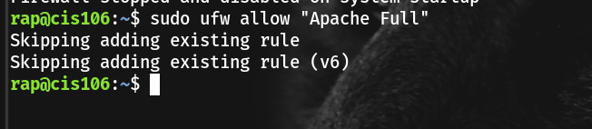
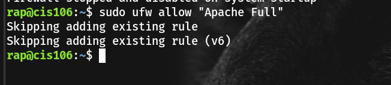

.png)
Command line: hostname -I

| Task | Command | Explanation |
|---|---|---|
| Install UFW | sudo apt install ufw |
Installs the Uncomplicated Firewall package |
| Enable firewall | sudo ufw enable |
Turns the firewall on and enables it at startup |
| Check firewall status | sudo ufw status |
Displays firewall status and active rules |
| Disable firewall | sudo ufw disable |
Turns the firewall off |
| Default rule: deny incoming | sudo ufw default deny incoming |
Blocks all incoming connections by default |
| Default rule: allow outgoing | sudo ufw default allow outgoing |
Allows all outgoing connections |
| Allow Apache | sudo ufw allow 'Apache Full' |
Allows HTTP (80) and HTTPS (443) traffic |
| Reload firewall | sudo ufw reload |
Applies firewall rule changes immediately |


 


| File / Directory | Purpose |
|---|---|
apache2.conf |
Main Apache configuration file |
ports.conf |
Defines which ports Apache listens on |
envvars |
Sets environment variables used by Apache |
sites-available/ |
Stores available virtual host configuration files |
sites-enabled/ |
Contains enabled virtual host configurations (symbolic links) |
mods-available/ |
Stores available Apache modules |
mods-enabled/ |
Contains enabled Apache modules (symbolic links) |
conf-available/ |
Stores additional Apache configuration files |
conf-enabled/ |
Contains enabled extra configuration files |
What is the command you use to check if Apache is running?
 What is the command you use to stop Apache?
What is the command you use to stop Apache? What is the command you use to restart Apache?
What is the command you use to restart Apache? What is the command used to test Apache configuration?
What is the command used to test Apache configuration?.png) What is the command used to check the installed version of Apache?
What is the command used to check the installed version of Apache?

 What are some basic commands we can use to review logs?
What are some basic commands we can use to review logs?The most basic commands used to review Apache log files are:
| Command | Purpose |
|---|---|
cat |
Displays the entire log file |
less |
Views log files one page at a time |
more |
Simple paged log viewer |
tail |
Shows the last lines of a log file |
tail -f |
Monitors log files in real time |
head |
Shows the first lines of a log file |
grep |
Searches for specific text patterns in logs |
wc -l |
Counts the number of entries (lines) in a log file |